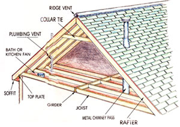
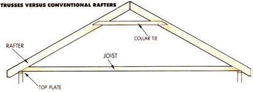
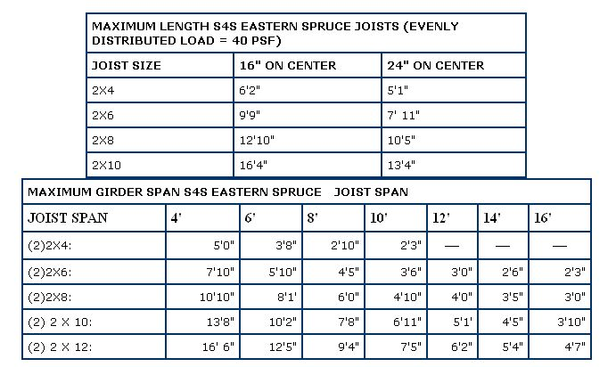
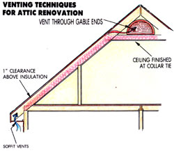
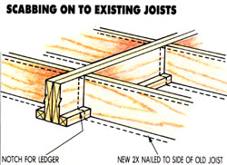

A Decision Maker's Guide To Attic Remodeling
How to figure out if your attic is ready for upward mobility, including conducting an inspection, structure, access and space.
By the Mother Earth News editors
January/February 1987
Figure out if your attic is ready for upward mobility.
Attics are special. Most of us who grew up in houses with attics tend to retain a fondness for the space. For children, the attic is a place of mystery and intrigue-a little scary but just close enough for comfort to the familiar bedrooms below. Even 20 or 30 years later, the attic probably keeps some of its allure, at least for the romantics among us.
That fondness can take on new dimensions when a family starts having serious growing pains. Under the pitch of the roof, you could close in a bedroom-small, but fine for a youngster-and add desperately needed living space.
As Simple as It Sounds?
Attic conversion is an appealing fantasy. The roof and basic framework for a new room are already in place, so it should be less costly and easier to finish an attic than to add a wing to the house. Yet these advantages can prove to be restrictions unless the original builder planned for later conversion of the attic.
Just to name a few obvious concerns, the attic's floor may not be structurally up to its new job, there may not be enough headroom, and there's probably no electrical service. In most cases, you can overcome these and other deficiencies. The question you need to answer is whether it might be easier (and less expensive) to add to the ground floor instead.
To make that decision, you have to do a fairly detailed attic survey and carefully analyze the problems you might run into.
Conducting an Attic Inspection
First, outfit yourself with a 25' tape measure and a flashlight, and head for the attic. As you clamber about, step only on the edges of the boards that stick up. The ceiling joists, as they're called, will support your weight easily, but the material between them is the top of the ceiling below. One false step, and you may drop in unexpectedly on your family and friends.
Start by figuring out whether the roof supports are conventional rafters or a trussed system. It won't take more than a glance. If there's a spider web of boards forming triangles between the roof and the floor, you've got trusses. The roof and floor of a trussed system depend on each other for strength. Never move any of the webs without consulting an engineer. Consequently, if your roof is trussed, as so many built in the last decade are, it's probably time to start planning that first-floor addition.
A conventional roof leaves lots of open space in the attic. The only obstructions may be horizontal boards (called collar ties) stretching from one roof pitch to the other a few feet below the peak. Within limits, collar ties can be moved to add ceiling height.
Fill in the Attic Checklist blanks. For now, assume that all joists and beams are supported from below only on their ends. Once you complete your attic survey, you can measure internal walls on the floor below to see if they offer any structural help.
Structure
Most attic floors were not designed to support the loads common in a normal living space. Standard building codes now specify that the floor of every living space be designed for 10 pounds per square foot (psf) dead load (the weight of the materials themselves) and 30 psf live loud (you,, your furniture, and other belongings). Many older attics were built for only 10 psf dead load and 10 psf live load, half the required total.
Since clear span--the portions of joist and beams that get no support from below-is so important to structural adequacy, you need to locate all load-bearing walls that may break up the spans of your attic's floor. Look for walls that run perpendicular to the joists and that are themselves supported by walls or bean is below. (In a few cases, you may find walls that appcar to be structural but have no support from below.) All load-bearing partitions support the ceiling, so you can consider them to end a joist clear span. Also look for walls or posts under girders; if you find a girder that appears to span more than about 12', look again for supporting partitions.
Consult the span tables to see if your attic's floor is up to specs. These tables are for dimensional lumber (planed to a size smaller than its claimed dimensions) of average strength (eastern spruce). If your attic's joists and beams are full-size, rough-cut lumber or are made of a stronger material, you may have some leeway. (Douglas fir, for example, is about 40% stronger in most specs than eastern spruce.) The stress calculations are also designed with a wide margin for error, so don't panic if you find that your attic isn't even up to the job it's handling now.
If your attic floor isn't strong enough to support chests of drawers, waterbeds, and leaping children, it can probably be brought up to standard. You can strengthen inadequate joists by "scabbing on": attaching new joists to the sides of the old ones. You'll probably have to use deeper boards, which will raise the height of your floor. Because the bending strength of a floor joist is proportional to the square of its depth, a 2 X 6 on edge is actually twice as strong in bending as doubled 2 X 4s.
Weak girders present a harder problem. Because the joists intersect them, you can't just scab additional lumber to the sides. To bolster a girder, you'll need to add posts or structural partitions on the floor below, or suspend it from a built-up truss. Either approach will compromise useful floor area, but with clever layout, it may not be a big problem.
ATTIC SURVEY CHECKLIST
Width of space:________________________________________________
Length of space: _______________________________________________
Roof height above ceiling joists at peak: _____________________________
Collar tie height above ceiling joists:________________________________
Rafter size:____________________________________________________
Joist size:_____________________________________________________
Beam/girder size: ______________________________________________
Joist clear span:________________________________________________
Beam/girder clear span:__________________________________________
Collar tie size:__________________________________________________
Location of plumbing vents:_______________________________________
Location of exhuast fan vents: ____________________________________
Location of chimneys: ___________________________________________
ATTICTruss webs should not be moved without careful structural analysis.
Access and Space
Access is crucial. Indeed, stairway design is a good place to start on the plan for your attic conversion. You may have to build a new stairway or rebuild an existing one to meet standards. Risers (the amount each step rises above the last) can be no more than 8 1/4" high, treads must be at least 10 1/4" deep and 32" wide, and the whole staircase must have minimum headroom of 6' 8".
Will there be enough room to make a comfortable living area? Your first thought may be that this is a matter of personal opinion, but it's not entirely so. No matter what you may think of building codes, they are the standard guide to habitable space. The building inspector may not stop you from building or using a substandard attic conversion, but the square footage probably won't be counted if you sell your house. Your improvement then could largely be money wasted.
For your new room to officially qualify as living space, at least 60 square feet or 50% (whichever is greater) must have a minimum ceiling height of 7' 6", and no area with a ceiling height of less than 5' is considered habitable. Even if you have enough ceiling height, overall square footage and horizontal dimensions may be a concern. According to standard code, the minimum size for a second bedroom is 70 square feet, and it must be at least 7' wide. Hallways must be at least 36" wide.
Because roof pitch and building width control the headroom in an attic, a set of rules of thumb can help you decide whether there's enough space in your attic for a room. From your attic survey, compare half the space's width to the roof peak height to find your roof pitch. (For example, if your attic is 32' wide and the roof peak is 8' above the ceiling joists, the pitch is 8 in 16, or 6 in 12.) If you have 6/12 pitch, your attic needs to be at least 40' wide to have enough space. A home with an 8/12 roof can be 30' wide, and one with 10/12 will work with a 24' width.
ATTICThe roof must be adequately ventilated above the insulation.
The most common way to remedy a space problem in a room restricted by roof pitch is to build one or more dormers. Shed (flatroofed) dormers are easier to add to an existing roofline than gable (peak-roofed) dormers, but most people prefer the traditional look of the gable.
Lighting and Fresh Air
Besides adding space, a dormer helps get badly needed daylight and fresh air into a finished attic. Skylights are often a good alternative to dormer windows, but they may not satisfy all building regulations. Code specifies that every sleeping room must have at least 8 square feet of window (or 8% of the floor area, whichever is greater), and that at least half of the windows must be operable. If there is no other exit to the outside, the window's smallest dimension must be at least 16", its total size at least 432 square inches, and its sill no higher than 4' off the floor. You should also be careful about using a skylight on south- or west-facing roofs. Unless the unit has shades, overheating can be a major problem in the summer.
Electrical
Any time you add living space to your home you'll need to add electrical circuits. Unless you plan to use electric space heat or your attic renovation is extensive (several rooms), you can probably get by with one new circuit. But if your plans include a new bathroom, that circuit will have to be equipped with a ground-fault circuit interrupter-a device that protects people from electrical shock.
Open the door to your fuse box and look at the bottom of the row(s) of circuit breakers or fuses. Are there any unoccupied recessed slots for additional breakers? If so, it probably won't cost much to add a new circuit.
Changing the metal box, however, will cost a minimum of several hundred dollars. And if your present service from the utility isn't large enough, you could end up paying for the installation of a new transformer, wire, and meter. When you change a fuse box, the electrical inspector may require you to fix other parts of your electrical system that no longer meet the latest building code. Though these changes may be for your own good, the bill can easily run into the thousands.
While you're contemplating your fuse box, spend a little time imagining how you'll get the new wires from the box up to the attic. Wires are small compared to plumbing runs, but they still must be routed inside walls or floors and must be as short as possible. Electrical layout could influence the design of your renovation.
Plumbing
If you'd like to put a bathroom in your remodeled attic, there are a number of restrictions you'll need to consider. First, are your water-supply and waste-disposal systems adequate? If you get your water by gravity, or even from a shallow well that is some distance below your house, you may find that the extra 8' or so of elevation will reduce water pressure to an annoying degree. (Every 2' of elevation is equal to 1 pound per square inch in pressure.) If you use a septic system for waste disposal, is it large enough to handle the extra water?
Plumbing layout can also present problems. Supply lines are small, so they can usually run laterally through holes or notches in floor joists, but this isn't possible for 1 1/2" to 4" drains. Code forbids any joist notching in the middle 1/3 of span and allows you to remove only 1/6 of their depth in the other 2/3. You may not drill a hole any larger than 2 1/2" in a joist or any closer than 2 1/2" from the top or bottom. Thus, unless your waste lines can run parallel to the joists, you'll have to raise the floor.
Then there's the matter of connecting to the house's main systems. You may be able to run supply and waste lines into plumbing on the floor below, but the new fixtures will have to be as near as possible to directly above the existing ones in order to use the existing plumbing vents. Plumbing code restrictions on the distance between fixtures and vents need careful study.
ATTICIf possible, lay out plumbing waste lines parallel to the joists.
Ceiling Insulation and Ventilation
Most houses with attics have their roof insulation laid between the ceiling joists because that's the easiest place to put it. When you finish the attic, though, the thermal barrier will have to go between (or on) the rafters.
Will there be enough depth between the rafters to get an adequate thickness of insulation? Most regional codes require at least R-19 in the roof-the equivalent of 6" fiberglass or high-grade 3" rigid foam. Find out what is required in your area, and use at least that much.
To ventilate properly, a 1 " space must be left between the top of the insulation and the underside of the roof sheathing. The air circulation thus created reduces condensation in the insulation during winter and heat buildup in the roofing materials during summer. In fact, your remodeling job must allow for a continuous circulation of air through all areas between the new living space and the roof. If you keep (or install) collar ties to form a flat ceiling, you can vent through gable ends using openings equal to 1/300 of the ceiling area. Air must be able to move from the area behind knee walls, over the top of the insulation, to the space over the collar ties, and out the gable end vents.
A cathedral ceiling is more difficult to vent properly. The air flow path must be between the soffits (with openings equal to 1/900 of ceiling area) and the roof peak ridge (with openings equal to 1/1,600 of ceiling area) through channels between the underside of the roof sheathing and the top of the insulation.
Once you allow for air movement above the insulation, you'll probably have to use rigid-foam insulation on the inside of the rafters to get a high enough R-value. Be sure to consider this thickness, plus that of finish ing materials, when you're figuring out what your ceiling height will be.
Onward and Upward
You now have the basic planning tools you need to get started on the sketches for your attic finishing work-or you're deep in thought about ground-level additions. In either case, some of the mystery of the attic is gone. But we hope the romance will stay for good.
EDITOR'S NOTE: Two books are practically indispensable to the remodeler. We highly recommend that you buy or read at the library Renovation, A Complete Guide, by Michael Litchfield (John Wiley & Sons, Inc., $34.95) and From the Walls In, by Charles Wing (Atlantic-Little, Brown Books, $12.95).
|
 |
 |
 |
|
 |
 |
 |